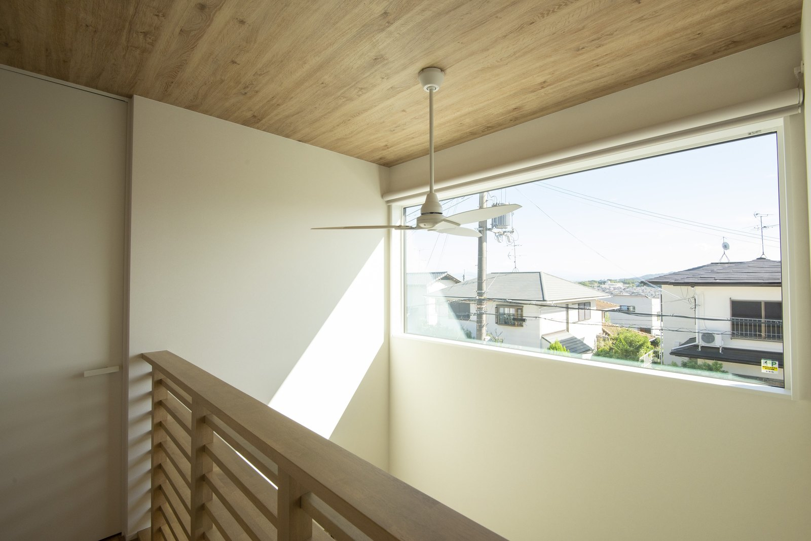
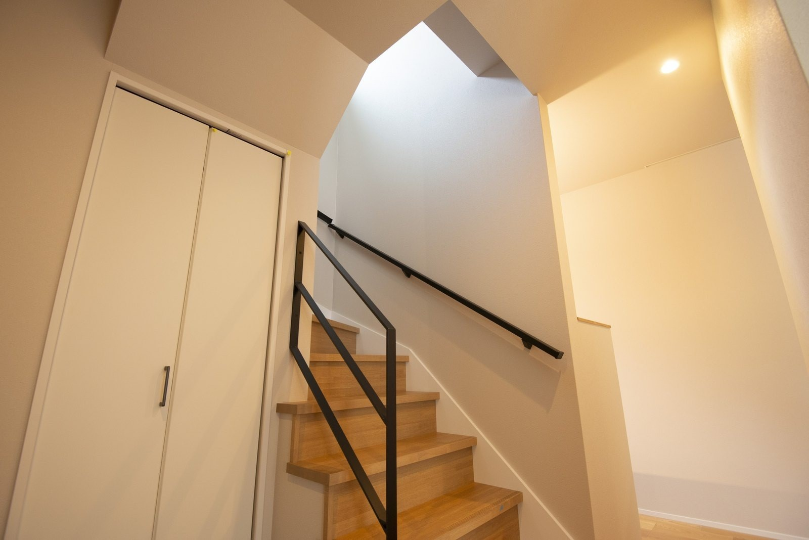

「2階だけ、どうしてこんなに暑いのか」
夏に、いちばん多くいただくご相談です。
我慢の問題ではありません。家のつくりの問題です。
熱は、どこから入ってくるのか
暑さ対策は、エアコンの話から始まりがちです。
でも、順番が逆です。
入ってくる熱を減らしてから、冷やす。
では、熱はどこから入るのか。
夏に入る熱のおよそ7割が窓などの開口部からと言われています。
壁や屋根よりも、まず窓です。
いちばん効くのは、窓の「外側」で止めること
カーテンやブラインドを閉めていませんか？
無いより良いのですが、熱はもうガラスの内側です。
効き方が変わるのは、ガラスの外側で止めたときです。
すだれ、外付けの日よけ、庇（ひさし）や軒。
昔の家の深い軒は、飾りではありません。

この窓の外側で日ざしを止められるかどうかで、夏の室温は変わります。
今日からできること。
南と西の窓の外側に、すだれか日よけを一枚。
設定温度を下げるより先に、試してみてください。
難しいのは西日です。
西にはそもそも大きな窓を付けないほうが確実なこともあります。
2階が暑いなら、疑うのは屋根の断熱
窓の次は、屋根です。
1階は涼しいのに2階だけ暑い。
原因は、屋根・天井の断熱と、小屋裏の熱の抜け道です。
古いお住まいでは、天井の断熱材が薄い、ずれてすき間ができている、ということが実際にあります。
後から足せる部分です。
新築なら、屋根まわりは最初に決める場所です。
図面に「断熱等級6」と書くのは簡単ですが、効くかどうかは現場の納まり次第です。
数字で言うと、こういう家です
| 当社の標準 | ざっくり言うと |
|---|---|
| UA値 0.4 （断熱） | 熱の逃げにくさ、入りにくさ。小さいほど良い |
| C値 0.2 （気密） | 家全体のすき間の少なさ。全棟で実際に測定 |
| 断熱等級6 （HEAT20 G2） | 国の基準の中でも上位。少ない冷暖房で足りる |
この性能なら、夏はエアコン1台で家じゅうが同じ温度になります。
冷やした空気が逃げないので、つけっぱなしのほうが安くつきます。
エアコンの使い方も、少しだけ
- 猛暑日の日中は、こまめに消さない。室温を下げるときが、いちばん電力を使います。
- 設定温度より、風の通り道。冷たい空気は下にたまるので、扇風機で上へ。
- フィルター掃除。効きが落ちた原因は、たいていこれ。

上にたまった空気をかき混ぜると、1階と2階の温度差が小さくなります。
夏の見学は、いちばん正直です
いちばん暑い時期に、建物を見てください。
数字より、玄関を入った瞬間の空気が正確です。

当社ではOB様邸見学を行っています。
暑さ寒さや電気代は、住んでいる方に直接どうぞ。
よくあるご質問
今の家の2階が暑いです。リフォームで直せますか？
手はあります。
天井裏の断熱材を足す、窓の外に日よけを付ける、内窓を入れる。
効きの大きいところから順にご提案します。
吹き抜けがあると、夏は暑くなりませんか？
断熱と気密が足りない家では、暑さ寒さが増幅されます。
効いている家では、空気を回す通り道になります。
吹き抜けの善し悪しは、性能とセットです。
断熱を上げると、家は高くなりますか？
断熱・気密にかけた分は上がります。
ただ、冷暖房費は毎月ずっと続きます。
当社は等級6が標準ですが、NEST（セミオーダー）は坪69.9万円〜（税込）です。
価格のページと2026年の住宅補助金の記事もご覧ください。

奈良の工務店シバサンホームで、初めての家づくりに伴走しています。夏は「2階が暑い」のご相談が増える季節。モットーはスピード・誠実さ・楽しさ。